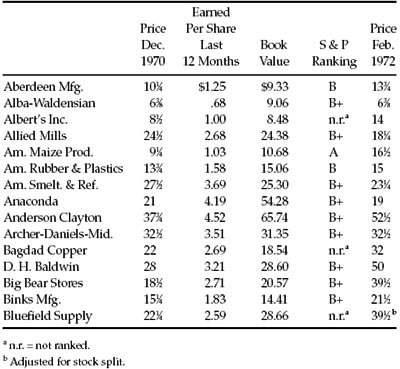
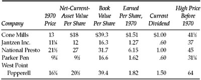

I n the previous chapter we have dealt with common-stock selection in terms of broad groups of eligible securities, from which the defensive investor is free to make up any list that he or his adviser prefers, provided adequate diversification is achieved. Our emphasis in selection has been chiefly on exclusions—advising on the one hand against all issues of recognizably poor quality, and on the other against the highest-quality issues if their price is so high as to involve a considerable speculative risk. In this chapter, addressed to the enterprising investor, we must consider the possibilities and the means of making individual selections which are likely to prove more profitable than an across-the-board average.
What are the prospects of doing this successfully? We would be less than frank, as the euphemism goes, if we did not at the outset express some grave reservations on this score. At first blush the case for successful selection appears self-evident. To get average results—e.g., equivalent to the performance of the DJIA—should require no special ability of any kind. All that is needed is a portfolio identical with, or similar to, those thirty prominent issues. Surely, then, by the exercise of even a moderate degree of skill—derived from study, experience, and native ability—it should be possible to obtain substantially better results than the DJIA.
Yet there is considerable and impressive evidence to the effect that this is very hard to do, even though the qualifications of those trying it are of the highest. The evidence lies in the record of the numerous investment companies, or “funds,” which have been in operation for many years. Most of these funds are large enough to command the services of the best financial or security analysts in the field, together with all the other constituents of an adequate research department. Their expenses of operation, when spread over their ample capital, average about one-half of 1% a year thereon, or less. These costs are not negligible in themselves; but when they are compared with the approximately 15% annual overall return on common stocks generally in the decade 1951–1960, and even the 6% return in 1961–1970, they do not bulk large. A small amount of superior selective ability should easily have overcome that expense handicap and brought in a superior net result for the fund shareholders.
Taken as a whole, however, the all-common-stock funds failed over a long span of years to earn quite as good a return as was shown on Standard & Poor’s 500-stock averages or the market as a whole. This conclusion has been substantiated by several comprehensive studies. To quote the latest one before us, covering the period 1960–1968: *
It appears from these results that random portfolios of New York Stock Exchange stocks with equal investment in each stock performed on the average better over the period than did mutual funds in the same risk class. The differences were fairly substantial for the low-and medium-risk portfolios (3.7% and 2.5% respectively per annum), but quite small for the high-risk portfolios(0.2% per annum). 1
As we pointed out in Chapter 9, these comparative figures in no way invalidate the usefulness of the investment funds as a financial institution. For they do make available to all members of the investing public the possibility of obtaining approximately average results on their common-stock commitments. For a variety of reasons, most members of the public who put their money in common stocks of their own choice fail to do nearly as well. But to the objective observer the failure of the funds to better the performance of a broad average is a pretty conclusive indication that such an achievement, instead of being easy, is in fact extremely difficult.
Why should this be so? We can think of two different explanations, each of which may be partially applicable. The first is the possibility that the stock market does in fact reflect in the current prices not only all the important facts about the companies’ past and current performance, but also whatever expectations can be reasonably formed as to their future. If this is so, then the diverse market movements which subsequently take place—and these are often extreme—must be the result of new developments and probabilities that could not be reliably foreseen. This would make the price movements essentially fortuitous and random. To the extent that the foregoing is true, the work of the security analyst—however intelligent and thorough—must be largely ineffective, because in essence he is trying to predict the unpredictable.
The very multiplication of the number of security analysts may have played an important part in bringing about this result. With hundreds, even thousands, of experts studying the value factors behind an important common stock, it would be natural to expect that its current price would reflect pretty well the consensus of informed opinion on its value. Those who would prefer it to other issues would do so for reasons of personal partiality or optimism that could just as well be wrong as right.
We have often thought of the analogy between the work of the host of security analysts on Wall Street and the performance of master bridge players at a duplicate-bridge tournament. The former try to pick the stocks “most likely to succeed”; the latter to get top score for each hand played. Only a limited few can accomplish either aim. To the extent that all the bridge players have about the same level of expertness, the winners are likely to be determined by “breaks” of various sorts rather than superior skill. On Wall Street the leveling process is helped along by the freemasonry that exists in the profession, under which ideas and discoveries are quite freely shared at the numerous get-togethers of various sorts. It is almost as if, at the analogous bridge tournament, the various experts were looking over each other’s shoulders and arguing out each hand as it was played.
The second possibility is of a quite different sort. Perhaps many of the security analysts are handicapped by a flaw in their basic approach to the problem of stock selection. They seek the industries with the best prospects of growth, and the companies in these industries with the best management and other advantages. The implication is that they will buy into such industries and such companies at any price, however high, and they will avoid less promising industries and companies no matter how low the price of their shares. This would be the only correct procedure if the earnings of the good companies were sure to grow at a rapid rate indefinitely in the future, for then in theory their value would be infinite. And if the less promising companies were headed for extinction, with no salvage, the analysts would be right to consider them unattractive at any price.
The truth about our corporate ventures is quite otherwise. Extremely few companies have been able to show a high rate of uninterrupted growth for long periods of time. Remarkably few, also, of the larger companies suffer ultimate extinction. For most, their history is one of vicissitudes, of ups and downs, of change in their relative standing. In some the variations “from rags to riches and back” have been repeated on almost a cyclical basis—the phrase used to be a standard one applied to the steel industry—for others spectacular changes have been identified with deterioration or improvement of management. *
How does the foregoing inquiry apply to the enterprising investor who would like to make individual selections that will yield superior results? It suggests first of all that he is taking on a difficult and perhaps impracticable assignment. Readers of this book, however intelligent and knowing, could scarcely expect to do a better job of portfolio selection than the top analysts of the country. But if it is true that a fairly large segment of the stock market is often discriminated against or entirely neglected in the standard analytical selections, then the intelligent investor may be in a position to profit from the resultant undervaluations.
But to do so he must follow specific methods that are not generally accepted on Wall Street, since those that are so accepted do not seem to produce the results everyone would like to achieve. It would be rather strange if—with all the brains at work professionally in the stock market—there could be approaches which are both sound and relatively unpopular. Yet our own career and reputation have been based on this unlikely fact. *
A Summary of the Graham-Newman Methods
To give concreteness to the last statement, it should be worthwhile to give a brief account of the types of operations we engaged in during the thirty-year life of Graham-Newman Corporation, between 1926 and 1956. † These were classified in our records as follows:
Arbitrages: The purchase of a security and the simultaneous sale of one or more other securities into which it was to be exchanged under a plan of reorganization, merger, or the like.
Liquidations: Purchase of shares which were to receive one or more cash payments in liquidation of the company’s assets.
Operations of these two classes were selected on the twin basis of (a) a calculated annual return of 20% or more, and (b) our judgment that the chance of a successful outcome was at least four out of five.
Related Hedges: The purchase of convertible bonds or convertible preferred shares, and the simultaneous sale of the common stock into which they were exchangeable. The position was established at close to a parity basis—i.e., at a small maximum loss if the senior issue had actually to be converted and the operation closed out in that way. But a profit would be made if the common stock fell considerably more than the senior issue, and the position closed out in the market.
Net-Current-Asset (or “Bargain”) Issues: The idea here was to acquire as many issues as possible at a cost for each of less than their book value in terms of net-current-assets alone—i.e., giving no value to the plant account and other assets. Our purchases were made typically at two-thirds or less of such stripped-down asset value. In most years we carried a wide diversification here—at least 100 different issues.
We should add that from time to time we had some large-scale acquisitions of the control type, but these are not relevant to the present discussion.
We kept close track of the results shown by each class of operation. In consequence of these follow-ups we discontinued two broader fields, which were found not to have shown satisfactory overall results. The first was the purchase of apparently attractive issues—based on our general analysis—which were not obtainable at less than their working-capital value alone. The second were “unrelated” hedging operations, in which the purchased security was not exchangeable for the common shares sold. (Such operations correspond roughly to those recently embarked on by the new group of “hedge funds” in the investment-company field. * In both cases a study of the results realized by us over a period of ten years or more led us to conclude that the profits were not sufficiently dependable—and the operations not sufficiently “headache proof”—to justify our continuing them.
Hence from 1939 on our operations were limited to “selfliquidating” situations, related hedges, working-capital bargains, and a few control operations. Each of these classes gave us quite consistently satisfactory results from then on, with the special feature that the related hedges turned in good profits in the bear markets when our “undervalued issues” were not doing so well.
We hesitate to prescribe our own diet for any large number of intelligent investors. Obviously, the professional techniques we have followed are not suitable for the defensive investor, who by definition is an amateur. As for the aggressive investor, perhaps only a small minority of them would have the type of temperament needed to limit themselves so severely to only a relatively small part of the world of securities. Most active-minded practitioners would prefer to venture into wider channels. Their natural hunting grounds would be the entire field of securities that they felt (a) were certainly not overvalued by conservative measures, and (b) appeared decidedly more attractive—because of their prospects or past record, or both—than the average common stock. In such choices they would do well to apply various tests of quality and price-reasonableness along the lines we have proposed for the defensive investor. But they should be less inflexible, permitting a considerable plus in one factor to offset a small black mark in another. For example, he might not rule out a company which had shown a deficit in a year such as 1970, if large average earnings and other important attributes made the stock look cheap. The enterprising investor may confine his choice to industries and companies about which he holds an optimistic view, but we counsel strongly against paying a high price for a stock (in relation to earnings and assets) because of such enthusiasm. If he followed our philosophy in this field he would more likely be the buyer of important cyclical enterprises—such as steel shares perhaps—when the current situation is unfavorable, the near-term prospects are poor, and the low price fully reflects the current pessimism. *
Secondary Companies
Next in order for examination and possible selection would come secondary companies that are making a good showing, have a satisfactory past record, but appear to hold no charm for the public. These would be enterprises on the order of ELTRA and Emhart at their 1970 closing prices. (See Chapter 13 above.) There are various ways of going about locating such companies. We should like to try a novel approach here and give a reasonably detailed exposition of one such exercise in stock selection. Ours is a double purpose. Many of our readers may find a substantial practical value in the method we shall follow, or it may suggest comparable methods to try out. Beyond that what we shall do may help them to come to grips with the real world of common stocks, and introduce them to one of the most fascinating and valuable little volumes in existence. It is Standard & Poor’s Stock Guide, published monthly, and made available to the general public under annual subscription. In addition many brokerage firms distribute the Guide to their clients (on request.)
The great bulk of the Guide is given over to about 230 pages of condensed statistical information on the stocks of more than 4,500 companies. These include all the issues listed on the various exchanges, say 3,000, plus some 1,500 unlisted issues. Most of the items needed for a first and even a second look at a given company appear in this compendium. (From our viewpoint the important missing datum is the net-asset-value, or book value, per share, which can be found in the larger Standard & Poor’s volumes and elsewhere.)
The investor who likes to play around with corporate figures will find himself in clover with the Stock Guide. He can open to any page and see before his eyes a condensed panorama of the splendors and miseries of the stock market, with all-time high and low prices going as far back as 1936, when available. He will find companies that have multiplied their price 2,000 times from the minuscule low to the majestic high. (For prestigious IBM the growth was “only” 333 times in that period.) He will find (not so exceptionally) a company whose shares advanced from 3/8 to 68, and then fell back to 3. 2 In the dividend record column he will find one that goes back to 1791—paid by Industrial National Bank of Rhode Island (which recently saw fit to change its ancient corporate name). * If he looks at the Guide for the year-end 1969 he will read that Penn Central Co. (as successor to Pennsylvania Railroad) has been paying dividends steadily since 1848; alas!, it was doomed to bankruptcy a few months later. He will find a company selling at only 2 times its last reported earnings, and another selling at 99 times such earnings. 3 In most cases he will find it difficult to tell the line of business from the corporate name; for one U.S. Steel there will be three called such things as ITI Corp. (bakery stuff) or Santa Fe Industries (mainly the large railroad). He can feast on an extraordinary variety of price histories, dividend and earnings histories, financial positions, capitalization setups, and what not. Backward-leaning conservatism, run-of-the-mine featureless companies, the most peculiar combinations of “principal business,” all kinds of Wall Street gadgets and widgets—they are all there, waiting to be browsed over, or studied with a serious objective.
The Guides give in separate columns the current dividend yields and price/earnings ratios, based on latest 12-month figures, wherever applicable. It is this last item that puts us on the track of our exercise in common-stock selection.
A Winnowing of the Stock Guide
Suppose we look for a simple prima facie indication that a stock is cheap. The first such clue that comes to mind is a low price in relation to recent earnings. Let’s make a preliminary list of stocks that sold at a multiple of nine or less at the end of 1970. That datum is conveniently provided in the last column of the even-numbered pages. For an illustrative sample we shall take the first 20 such low-multiplier stocks; they begin with the sixth issue listed, Aberdeen Mfg. Co., which closed the year at 10¼, or 9 times its reported earnings of $1.25 per share for the 12 months ended September 1970. The twentieth such issue is American Maize Products, which closed at 9½, also with a multiplier of 9.
The group may have seemed mediocre, with 10 issues selling below $10 per share. (This fact is not truly important; it would probably—not necessarily—warn defensive investors against such a list, but the inference for enterprising investors might be favorable on balance.) * Before making a further scrutiny let us calculate some numbers. Our list represents about one in ten of the first 200 issues looked at. On that basis the Guide should yield, say, 450 issues selling at multipliers under 10. This would make a goodly number of candidates for further selectivity.
So let us apply to our list some additional criteria, rather similar to those we suggested for the defensive investor, but not so severe. We suggest the following:
The earnings figures in the Guide were generally for those ending September 30, 1970, and thus do not include what may be a bad quarter at the end of that year. But an intelligent investor can’t ask for the moon—at least not to start with. Note also that we set no lower limit on the size of the enterprise. Small companies may afford enough safety if bought carefully and on a group basis.
When we have applied the five additional criteria our list of 20 candidates is reduced to only five. Let us continue our search until the first 450 issues in the Guide have yielded us a little “portfolio” of 15 stocks meeting our six requirements. (They are set forth in Table 15–1, together with some relevant data.) The group, of course, is presented for illustration only, and would not necessarily have been chosen by our inquiring investor.
The fact is that the user of our method would have had a much wider choice. If our winnowing approach had been applied to all 4,500 companies in the Stock Guide, and if the ratio for the first tenth had held good throughout, we would end up with about 150 companies meeting all six of our criteria of selection. The enterprising investor would then be able to follow his judgment—or his partialities and prejudices—in making a third selection of, say, one out of five in this ample list.
The Stock Guide material includes “Earnings and Dividend Rankings,” which are based on stability and growth of these factors for the past eight years. (Thus price attractiveness does not enter here.) We include the S & P rankings in our Table 15-1. Ten of the 15 issues are ranked B+ (= average) and one (American Maize) is given the “high” rating of A. If our enterprising investor wanted to add a seventh mechanical criterion to his choice, by considering only issues ranked by Standard & Poor’s as average or better in quality, he might still have about 100 such issues to choose from. One might say that a group of issues, of at least average quality, meeting criteria of financial condition as well, purchasable at a low multiplier of current earnings and below asset value, should offer good promise of satisfactory investment results.
TABLE 15-1 A Sample Portfolio of Low-Multiplier Industrial

Single Criteria for Choosing Common Stocks
An inquiring reader might well ask whether the choice of a better than average portfolio could be made a simpler affair than we have just outlined. Could a single plausible criterion be used to good advantage—such as a low price/earnings ratio, or a high dividend return, or a large asset value? The two methods of this sort that we have found to give quite consistently good results in the longer past have been (a) the purchase of low-multiplier stocks of important companies (such as the DJIA list), and (b) the choice of a diversified group of stocks selling under their net-current-asset value (or working-capital value). We have already pointed out that the low-multiplier criterion applied to the DJIA at the end of 1968 worked out badly when the results are measured to mid-1971. The record of common-stock purchases made at a price below their working-capital value has no such bad mark against it; the drawback here has been the drying up of such opportunities during most of the past decade.
What about other bases of choice? In writing this book we have made a series of “experiments,” each based on a single, fairly obvious criterion. The data used would be readily found in the Standard & Poor’s Stock Guide. In all cases a 30-stock portfolio was assumed to have been acquired at the 1968 closing prices and then revalued at June 30, 1971. The separate criteria applied were the following, as applied to otherwise random choices: (1) A low multiplier of recent earnings (not confined to DJIA issues). (2) A high dividend return. (3) A very long dividend record. (4) A very large enterprise, as measured by number of outstanding shares. (5) A strong financial position. (6) A low price in dollars per share. (7) A low price in relation to the previous high price. (8) A high quality-ranking by Standard & Poor’s.
It will be noted that the Stock Guide has at least one column relating to each of the above criteria. This indicates the publisher’s belief that each is of importance in analyzing and choosing common stocks. (As we pointed out above, we should like to see another figure added: the net-asset-value per share.)
The most important fact that emerges from our various tests relates to the performance of stocks bought at random. We have tested this performance for three 30-stock portfolios, each made up of issues found on the first line of the December 31, 1968, Stock Guide and also found in the issue for August 31, 1971. Between these two dates the S & P composite was practically unchanged, and the DJIA lost about 5%. But our 90 randomly chosen issues declined an average of 22%, not counting 19 issues that were dropped from the Guide and probably showed larger losses. These comparative results undoubtedly reflect the tendency of smaller issues of inferior quality to be relatively overvalued in bull markets, and not only to suffer more serious declines than the stronger issues in the ensuing price collapse, but also to delay their full recovery—in many cases indefinitely. The moral for the intelligent investor is, of course, to avoid second-quality issues in making up a portfolio, unless—for the enterprising investor—they are demonstrable bargains.
Other results gleaned from our portfolio studies may be summarized as follows:
Only three of the groups studied showed up better than the S & P composite (and hence better than the DJIA), viz: (1) Industrials with the highest quality ranking (A+). These advanced 9½% in the period against a decline of 2.4% for the S & P industrials, and 5.6% for the DJIA. (However, the ten public-utility issues rated A+ declined 18% against a decline of 14% for the 55-stock S & P public-utility index.) It is worth remarking that the S & P rankings showed up very well in this single test. In every case a portfolio based on a higher ranking did better than a lower-ranking portfolio. (2) Companies with more than 50 million shares outstanding showed no change on the whole, as against a small decline for the indexes. (3) Strangely enough, stocks selling at a high price per share (over 100) showed a slight (1%) composite advance.
Among our various tests we made one based on book value, a figure not given in the Stock Guide. Here we found—contrary to our investment philosophy—that companies that combined major size with a large good-will component in their market price did very well as a whole in the 2½-year holding period. (By “good-will component” we mean the part of the price that exceeds the book value.) * Our list of “good-will giants” was made up of 30 issues, each of which had a good-will component of over a billion dollars, representing more than half of its market price. The total market value of these good-will items at the end of 1968 was more than $120 billions! Despite these optimistic market valuations the group as a whole showed a price advance per share of 15% between December 1968 and August 1971, and acquitted itself best among the 20-odd lists studied.
A fact like this must not be ignored in a work on investment policies. It is clear that, at the least, a considerable momentum is attached to those companies that combine the virtues of great size, an excellent past record of earnings, the public’s expectation of continued earnings growth in the future, and strong market action over many past years. Even if the price may appear excessive by our quantitative standards the underlying market momentum may well carry such issues along more or less indefinitely. (Naturally this assumption does not apply to every individual issue in the category. For example, the indisputable good-will leader, IBM, moved down from 315 to 304 in the 30-month period.) It is difficult to judge to what extent the superior market action shown is due to “true” or objective investment merits and to what extent to long-established popularity. No doubt both factors are important here. Clearly, both the long-term and the recent market action of the good-will giants would recommend them for a diversified portfolio of common stocks. Our own preference, however, remains for other types that show a combination of favorable investment factors, including asset values of at least two-thirds the market price.
The tests using other criteria indicate in general that random lists based on a single favorable factor did better than random lists chosen for the opposite factor—e.g., low-multiplier issues had a smaller decline in this period than high-multiplier issues, and long-term dividend payers lost less than those that were not paying dividends at the end of 1968. To that extent the results support our recommendation that the issues selected meet a combination of quantitative or tangible criteria.
Finally we should comment on the much poorer showing made by our lists as a whole as compared with the price record of the S & P composite. The latter is weighted by the size of each enterprise, whereas our tests are based on taking one share of each company. Evidently the larger emphasis given to giant enterprises by the S & P method made a significant difference in the results, and points up once again their greater price stability as compared with “run-of-the-mine” companies.
Bargain Issues, or Net-Current-Asset Stocks
In the tests discussed above we did not include the results of buying 30 issues at a price less than their net-current-asset value. The reason was that only a handful, at most, of such issues would have been found in the Stock Guide at the end of 1968. But the picture changed in the 1970 decline, and at the low prices of that year a goodly number of common stocks could have been bought at below their working-capital value. It always seemed, and still seems, ridiculously simple to say that if one can acquire a diversified group of common stocks at a price less than the applicable net current assets alone—after deducting all prior claims, and counting as zero the fixed and other assets—the results should be quite satisfactory. They were so, in our experience, for more than 30 years—say, between 1923 and 1957—excluding a time of real trial in 1930–1932.
Has this approach any relevance at the beginning of 1971? Our answer would be a qualified “yes.” A quick runover of the Stock Guide would have uncovered some 50 or more issues that appeared to be obtainable at or below net-current-asset value. As might be expected a good many of these had been doing badly in the difficult year 1970. If we eliminated those which had reported net losses in the last 12-month period we would be still left with enough issues to make up a diversified list.
We have included in Table 15-2 some data on five issues that sold at less than their working-capital value * at their low prices of 1970. These give some food for reflection on the nature of stock-price fluctuations. How does it come about that well-established companies, whose brands are household names all over the country, could be valued at such low figures—at the same time when other concerns (with better earnings growth of course) were selling for billions of dollars in excess of what their balance sheets showed? To quote the “old days” once more, the idea of good will as an element of intangible value was usually associated with a “trade name.” Names such as Lady Pepperell in sheets, Jantzen in swim suits, and Parker in pens would be considered assets of great value indeed. But now, if the “market doesn’t like a company,” not only renowned trade names but land, buildings, machinery, and what you will, can all count for nothing in its scales. Pascal said that “the heart has its reasons that the reason doesn’t understand.” * For “heart” read “Wall Street.”
TABLE 15-2 Stocks of Prominent Companies Selling at or Below Net-Current-Asset Value in 1970

There is another contrast that comes to mind. When the going is good and new issues are readily salable, stock offerings of no quality at all make their appearance. They quickly find buyers; their prices are often bid up enthusiastically right after issuance to levels in relation to assets and earnings that would put IBM, Xerox, and Polaroid to shame. Wall Street takes this madness in its stride, with no overt efforts by anyone to call a halt before the inevitable collapse in prices. (The SEC can’t do much more than insist on disclosure of information, about which the speculative public couldn’t care less, or announce investigations and usually mild punitive actions of various sorts after the letter of the law has been clearly broken.) When many of these minuscule but grossly inflated enterprises disappear from view, or nearly so, it is all taken philosophically enough as “part of the game.” Everybody swears off such inexcusable extravagances—until next time.
Thanks for the lecture, says the gentle reader. But what about your “bargain issues”? Can one really make money in them without taking a serious risk? Yes indeed, if you can find enough of them to make a diversified group, and if you don’t lose patience if they fail to advance soon after you buy them. Sometimes the patience needed may appear quite considerable. In our previous edition we hazarded a single example (p. 188) which was current as we wrote. It was Burton-Dixie Corp., with stock selling at 20, against net-current-asset value of 30, and book value of about 50. A profit on that purchase would not have been immediate. But in August 1967 all the shareholders were offered 53 3/4 for their shares, probably at just about book value. A patient holder, who had bought the shares in March 1964 at 20 would have had a profit of 165% in 3½ years—a noncompounded annual return of 47%. Most of the bargain issues in our experience have not taken that long to show good profits–nor have they shown so high a rate. For a somewhat similar situation, current as we write, see our discussion of National Presto Industries above, p. 168.
Special Situations or “Workouts”
Let us touch briefly on this area, since it is theoretically includable in the program of operations of an enterprising investor. It was commented upon above. Here we shall supply some examples of the genre, and some further remarks on what it appears to offer an open-minded and alert investor.
Three such situations, among others, were current early in 1971, and they may be summarized as follows:
SITUATION 1. Acquisition of Kayser-Roth by Borden’s. In January 1971 Borden Inc. announced a plan to acquire control of Kayser-Roth (“diversified apparel”) by giving 1 1/3 shares of its own stock in exchange for one share of Kayser-Roth. On the following day, in active trading. Borden closed at 26 and Kayser-Roth at 28. If an “operator” had bought 300 shares of Kayser-Roth and sold 400 Borden at these prices and if the deal were later consummated on the announced terms, he would have had a profit of some 24% on the cost of his shares, less commissions and some other items. Assuming the deal had gone through in six months, his final profit might have been at about a 40% per annum rate.
SITUATION 2. In November 1970 National Biscuit Co. offered to buy control of Aurora Plastics Co. at $11 in cash. The stock was selling at about 8½; it closed the month at 9 and continued to sell there at year-end. Here the gross profit indicated was originally about 25%, subject to the risks of nonconsummation and to the time element.
SITUATION 3. Universal-Marion Co., which had ceased its business operations, asked its shareholders to ratify dissolution of the concern. The treasurer indicated that the common stock had a book value of about $28½ per share, a substantial part of which was in liquid form. The stock closed 1970 at 21½, indicating a possible gross profit here, if book value was realized in liquidation, of more than 30%.
If operations of this kind, conducted on a diversified basis for spreading the risk, could be counted to yield annual profits of, say, 20% or better, they would undoubtedly be more than merely worthwhile. Since this is not a book on “special situations,” we are not going into the details of the business—for it really is a business. Let us point out two contradictory developments there in recent years. On the one hand the number of deals to choose from has increased enormously, as compared with, say, ten years ago. This is a consequence of what might be called a mania of corporations to diversify their activities through various types of acquisitions, etc. In 1970 the number of “merger announcements” aggregated some 5,000, down from over 6,000 in 1969. The total money values involved in these deals amounted to many, many billions. Perhaps only a small fraction of the 5,000 announcements could have presented a clear-cut opportunity for purchase of shares by a special-situations man, but this fraction was still large enough to keep him busy studying, picking, and choosing.
The other side of the picture is that an increasing proportion of the mergers announced failed to be consummated. In such cases, of course, the aimed-for profit is not realized, and is likely to be replaced by a more or less serious loss. Reasons for nonsuccess are numerous, including antitrust intervention, shareholder opposition, change in “market conditions,” unfavorable indications from further study, inability to agree on details, and others. The trick here, of course, is to have the judgment, buttressed by experience, to pick the deals most likely to succeed and also those which are likely to occasion the smallest loss if they fail. *
Further Comment on the Examples Above
KAYSER-ROTH. The directors of this company had already rejected (in January 1971) the Borden proposal when this chapter was written. If the operation had been “undone” immediately the overall loss, including commissions, would have been about 12% of the cost of the Kayser-Roth shares.
AURORA PLASTICS. Because of the bad showing of this company in 1970 the takeover terms were renegotiated and the price reduced to 10½. The shares were paid for at the end of May. The annual rate of return realized here was about 25%.
UNIVERSAL-MARION. This company promptly made an initial distribution in cash and stock worth about $7 per share, reducing the investment to say 14½. However the market price fell as low as 13 subsequently, casting doubt on the ultimate outcome of the liquidation.
Assuming that the three examples given are fairly representative of “workout or arbitrage” opportunities as a whole in 1971, it is clear that they are not attractive if entered into upon a random basis. This has become more than ever a field for professionals, with the requisite experience and judgment.
There is an interesting sidelight on our Kayser-Roth example. Late in 1971 the price fell below 20 while Borden was selling at 25, equivalent to 33 for Kayser-Roth under the terms of the exchange offer. It would appear that either the directors had made a great mistake in turning down that opportunity or the shares of Kayser-Roth were now badly undervalued in the market. Something for a security analyst to look into.